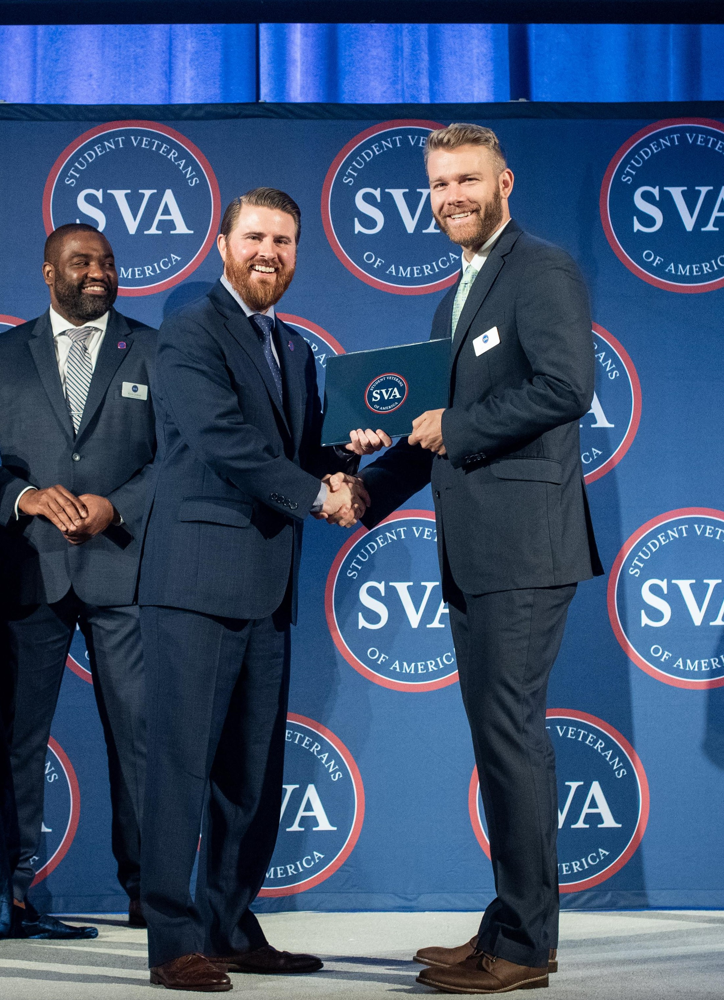
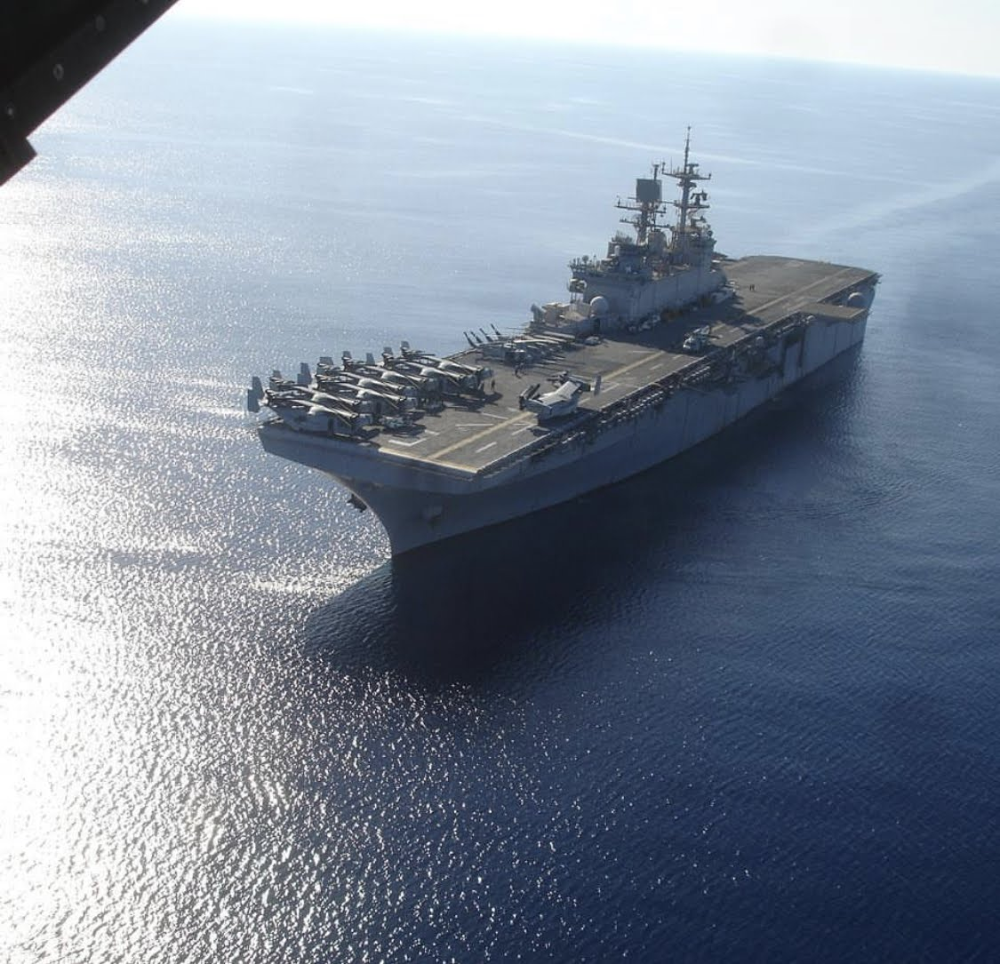

Who am I?
My name is Scott Shirley. I am a graduating senior at the University of Washington, Bothell studying computer science and software engineering. I am passionate about technology and using as a tool to connect and empower individuals.
I am a student.
I recently finishing my last full quarter at the University of Washington, where I have been studying computer science and software engineering.
I like to think of my self as a purpetual student or someone who is always learning. I am curious person and love to learn how things work.
Whether it is something from the internet browsing TIL on Reddit or sitting in a formal lecture, I strive to learn something new everyday.
Especially during the stressful times of looking for a new job, reading job descriptions is daunting. The tech stacks that exist are many and the specific ones I am familiar with are varying.
However, I am convinced that my eagerness and willingness to learn bridges the gap. And let's be honest, you'd be lying if you said you were proficeient in all of the current tech stacks that are used today.

I am a tech junky.
In Feburary of 2020, at the beginning of the COVID-19 quarantine, I found out I was selected by the Student Veterans of America as one of eight student veterans that would recieve the 2020 Google STEM scholarship. It was a $10,000 scholarship awarded to student veterans who have shown outstanding performance in academics as well as in their community. The scholarship came after I was selected to attended the SVA's Leadership Institute the previous September in Washington, DC, where we spent a week developing our personal brand and networking. It was a capitol experience that I will never forget and will continue to encourage other student veterans on my campus to apply.
I am an artist.
From a very young age, I have always been creative. As a kid I loved to build Lego and draw. As I got older, I became more and more interested in the digital arts. I started making computer game mods as a teenager for games like Halo Custom Edition, Counter Strike, and Gary's Mod. I really enjoyed 3d modeing and creating spaces to experience. After highschool, I followed my artist passions and attended Digipen Institute of Technology where I graduated with a bachelors of arts in digital art and animation.

I am a Sailor.
After graduating from Digipen 2013, I enlisted into the US Navy as a Hospital Corpsman. I served for five years out of Jacksonville, Florida and Camp Lejeune, NC.
While in Florida, I worked in the labor and delivery ward assisting with newborn deliveries. I deployed as a security detachment with 1st Battalion, 6th Marines in support of Operation Inherent Resolve.
After returning and being promoted, I was the assisting work center supervisor, incharge of 26 junior enlisted Sailors.
Additionally, I was responsible for the procurement and distribution of a $128k operations budget as well as responsible and accountable for over $1.49 million dollars worth of specialty medical equipment.
Naval Hospital Jacksonville, Florida recieved the Joint Commission Gold Seal during the 2016 hospital-wide inspection.
In preparation for the inspection of our department, I led the audit of personnel records for 12 providers, 22 nurses, and 28 enlisted Sailors ensuring compliance with command, state, and federal training guidelines.
In 2016, I transfered to 2d Marine Division out of Camp Lejeune, NC. I was assigned to 3d Battalion, 2d Marines and deployed fairly quickly after reporting.
While deployed, I reported daily personnel accountability, tracked professional development, facilitated peer mentorship, authored annual individual performance reports for 8 junior Sailors.
I performed operation risk management and organized safety procedures for 8 live-fire training missions held across 4 countries and 2 areas of operations.
Those procedures led to the safe evacuation of 2 individuals without critical impact to mission safety which contributed to the successful completion on the mission.
After returning home, I transfered to Headquarters Company, 2d Marine Regiment. I Led a team of 23 personnel in the support of 4,400 Marines in 3 subordinate groups.
Sailors under my supervision participated in 14 multi-national training missions and 4 operational deployments across 3 continents simultaneously.
Addiontally, I conducted audits of medical surveillance programs, patient health records, and workplace standard operating procedures of four commands and six workplaces to ensure compliance with local and federal government health and safety laws in preparation for a biennial, installation wide inspection.
Audits conducted resulted in the finding of only four discrepancies out of 72 key areas. Remedial action plans were development and executed resulting in zero discrepancies during the official inspection leading to a unity-wide award for outstanding readiness.